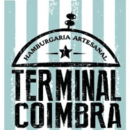
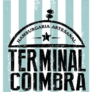

Recomendações
Restauração
|  Terminal Coimbra | Hamburgueria Artesanal localizada no centro da Vila. Além dos hambúrgueres também conta com uma vasta variedade de cervejas artesanais |
VISITAR VILA VERDE
|  Terminal Coimbra | Hamburgueria Artesanal localizada no centro da Vila. Além dos hambúrgueres também conta com uma vasta variedade de cervejas artesanais |